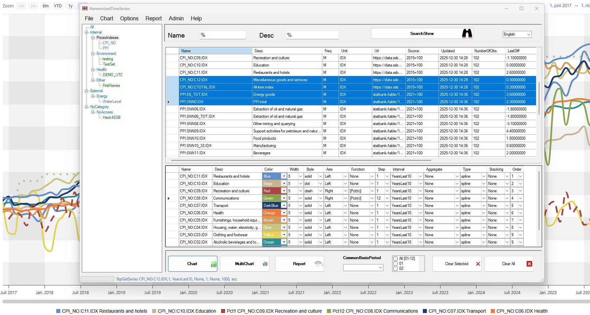
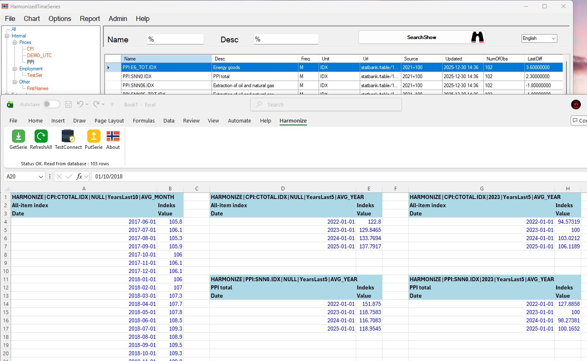

Welcome to Harmonize. Use the menu above to navigate to:
- Guide (Users guide & documentation)
- Downloads (install with admin rights, or copy files without)
- Demo Chart samples created by Harmonize
- Data Published time series datasets


Harmonize is a flexible platform for managing, analyzing, and publishing statistical data. It enables users to combine datasets, automate workflows, and deliver results across multiple tools and formats. It helps organizations share data efficiently and promotes transparency.
Main features
- Data management
- Access and explore datasets based on your permissions
- Upload and download CSV data files
- Export data to CSV from charts or directly from the application
- View access reports showing who has access to which datasets
- Analysis & visualization
- Combine and analyze time series of different frequencies in a single chart
- Compare datasets with different base years (e.g. 2015=100 vs 2020=100) in the same view
- Create overlay charts to compare periods (e.g. year-over-year)
- Generate multi-chart views with one chart per series or dataset
- Flexible reporting options with both horizontal and vertical data layouts
- Save and reuse your selections – automatically repopulated with fresh data
- Supports dynamic intervals (e.g. always current year) and static intervals
- Publish charts easily and reuse them on any website
- Functions & aggregations
- Built-in aggregation functions:
avg_quarter,avg_year - Difference function:
diff_n - Percentage change functions:
pct_1,pct_2, …pct_n(lag-based) - Timezone-aware aggregations – data stored in UTC, displayed in configured timezone
- Correctly handles summer/winter time (DST) transitions for high-frequency data
- Built-in aggregation functions:
- Integration
- Integrate with Python, R, and MSSQL for data upload and retrieval
- Excel add-in (v1.0) – Retrieve and update data directly from Excel
- API support for upserting, creating and deleting datasets
- Stored procedure API:
GetSeries,PutTime,Create Datasets,Delete
- Standards & export
- PX-Web export – Generate PX-Web compatible files directly from Harmonize
- Export data in multiple formats including JSON, CSV, and Excel (XLS)
- Uses a clean, structured JSON format as a standard data interface
- Customization
- Customizable HTML/JavaScript templates for charts, multi-charts, overlays, and reports
- Configure visual settings such as color schemes and dynamic or fixed intervals
- Multilingual UI – currently includes English, Norwegian, Ukrainian, Albanian, Hindi, and Arabic
- Add new languages or refine existing translations without developer involvement
- Users can manage and maintain their own datasets within the system